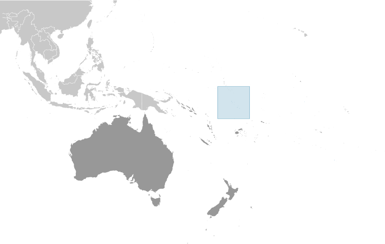
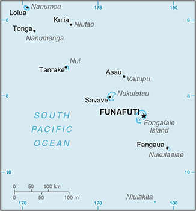
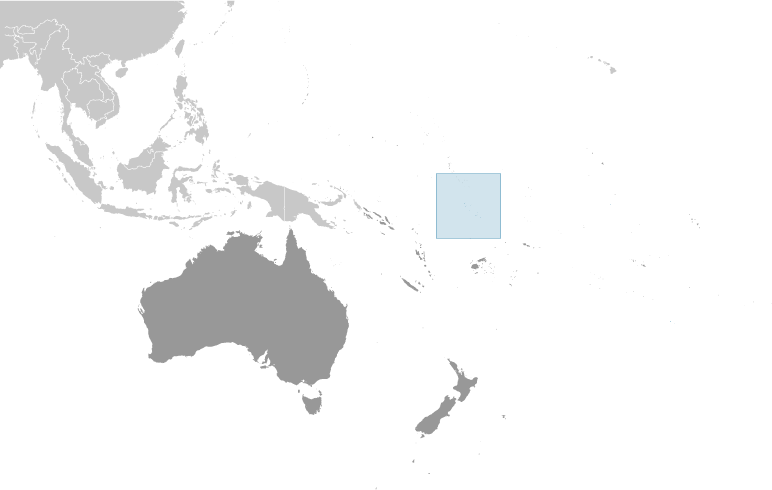
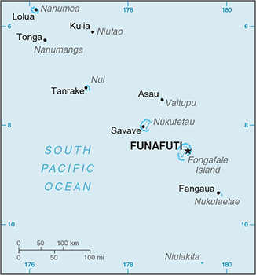

Australia-Oceania :: TUVALU
Introduction :: TUVALU
-
In 1974, ethnic differences within the British colony of the Gilbert and Ellice Islands caused the Polynesians of the Ellice Islands to vote for separation from the Micronesians of the Gilbert Islands. The following year, the Ellice Islands became the separate British colony of Tuvalu. Independence was granted in 1978. In 2000, Tuvalu negotiated a contract leasing its Internet domain name ".tv" for $50 million in royalties over a 12-year period. The agreement was subsequently renegotiated but details were not disclosed.
Geography :: TUVALU
-
Oceania, island group consisting of nine coral atolls in the South Pacific Ocean, about half way from Hawaii to Australia8 00 S, 178 00 EOceaniatotal: 26 sq kmland: 26 sq kmwater: 0 sq kmcountry comparison to the world: 2390.1 times the size of Washington, DC0 km24 kmterritorial sea: 12 nmcontiguous zone: 24 nmexclusive economic zone: 200 nmtropical; moderated by easterly trade winds (March to November); westerly gales and heavy rain (November to March)low-lying and narrow coral atollsmean elevation: 2 melevation extremes: lowest point: Pacific Ocean 0 mhighest point: unnamed location 5 mfish, coconut (copra)agricultural land: 60%arable land 0%; permanent crops 60%; permanent pasture 0%forest: 33.3%other: 6.7% (2011 est.)0 sq km (2012)over half of the population resides on the atoll of Funafutisevere tropical storms are usually rare, but in 1997 there were three cyclones; low levels of islands make them sensitive to changes in sea levelwater needs met by catchment systems; the use of sand as a building material has led to beachhead erosion; excessive clearance of forest undergrowth for use as fuel; damage to coral reefs from increasing ocean temperatures and acidification; rising sea levels threaten water table; in 2000, the government appealed to Australia and New Zealand to take in Tuvaluans if rising sea levels should make evacuation necessaryparty to: Biodiversity, Climate Change, Climate Change-Kyoto Protocol, Desertification, Law of the Sea, Ozone Layer Protection, Ship Pollution, Whalingsigned, but not ratified: none of the selected agreementsone of the smallest and most remote countries on Earth; six of the nine coral atolls - Nanumea, Nui, Vaitupu, Nukufetau, Funafuti, and Nukulaelae - have lagoons open to the ocean; Nanumaya and Niutao have landlocked lagoons; Niulakita does not have a lagoon
People and Society :: TUVALU
-
11,052 (July 2017 est.)country comparison to the world: 222noun: Tuvaluan(s)adjective: TuvaluanPolynesian 96%, Micronesian 4%Tuvaluan (official), English (official), Samoan, Kiribati (on the island of Nui)Protestant 98.4% (Church of Tuvalu (Congregationalist) 97%, Seventh-Day Adventist 1.4%), Baha'i 1%, other 0.6%0-14 years: 29.29% (male 1,659/female 1,578)15-24 years: 19.26% (male 1,106/female 1,023)25-54 years: 36.66% (male 2,036/female 2,016)55-64 years: 8.77% (male 396/female 573)65 years and over: 6.02% (male 263/female 402) (2017 est.)total: 25.7 yearsmale: 24.7 yearsfemale: 26.9 years (2017 est.)country comparison to the world: 1520.85% (2017 est.)country comparison to the world: 12823.7 births/1,000 population (2017 est.)country comparison to the world: 628.5 deaths/1,000 population (2017 est.)country comparison to the world: 79-6.7 migrant(s)/1,000 population (2017 est.)country comparison to the world: 203over half of the population resides on the atoll of Funafutiurban population: 61.5% of total population (2017)rate of urbanization: 1.71% annual rate of change (2015-20 est.)FUNAFUTI (capital) 6,000 (2014)at birth: 1.05 male(s)/female0-14 years: 1.05 male(s)/female15-24 years: 1.1 male(s)/female25-54 years: 0.99 male(s)/female55-64 years: 0.69 male(s)/female65 years and over: 0.69 male(s)/femaletotal population: 0.98 male(s)/female (2016 est.)23.5 yearsnote: median age at first birth among women 25-29 (2007 est.)total: 29 deaths/1,000 live birthsmale: 31.5 deaths/1,000 live birthsfemale: 26.4 deaths/1,000 live births (2017 est.)country comparison to the world: 66total population: 66.9 yearsmale: 64.7 yearsfemale: 69.2 years (2017 est.)country comparison to the world: 1732.95 children born/woman (2017 est.)country comparison to the world: 5830.5% (2007)16.5% of GDP (2014)country comparison to the world: 31.22 physicians/1,000 population (2009)improved:urban: 98.3% of populationrural: 97% of populationtotal: 97.7% of populationunimproved:urban: 1.7% of populationrural: 3% of populationtotal: 2.3% of population (2015 est.)improved:urban: 86.3% of populationrural: 80.2% of populationtotal: 83.3% of populationunimproved:urban: 13.7% of populationrural: 19.8% of populationtotal: 16.7% of population (2012 est.)NANANA51.6% (2016)country comparison to the world: 51.6% (2007)country comparison to the world: 126NA
Government :: TUVALU
-
conventional long form: noneconventional short form: Tuvalulocal long form: nonelocal short form: Tuvaluformer: Ellice Islandsetymology: "tuvalu" means "group of eight" or "eight standing together" referring to the country's eight traditionally inhabited islandsparliamentary democracy (House of Assembly) under a constitutional monarchy; a Commonwealth realmname: Funafuti; note - the capital is an atoll of some 29 islets; administrative offices are in Vaiaku Village on Fongafale Isletgeographic coordinates: 8 31 S, 179 13 Etime difference: UTC+12 (17 hours ahead of Washington, DC, during Standard Time)7 island councils and 1 town council*; Funafuti*, Nanumaga, Nanumea, Niutao, Nui, Nukufetau, Nukulaelae, Vaitupu1 October 1978 (from the UK)Independence Day, 1 October (1978)previous 1978 (at independence); latest effective 1 October 1986; amended 2007, 2010, 2013 (2016)mixed legal system of English common law and local customary lawhas not submitted an ICJ jurisdiction declaration; non-party state to the ICCtcitizenship by birth: yescitizenship by descent: yes; for a child born abroad, at least one parent must be a citizen of Tuvaludual citizenship recognized: yesresidency requirement for naturalization: na18 years of age; universalchief of state: Queen ELIZABETH II (since 6 February 1952); represented by Governor General Iakoba TAEIA Italeli (since 16 April 2010)head of government: Prime Minister Enele SOPOAGA (since 5 August 2013)cabinet: Cabinet appointed by the governor general on recommendation of the prime ministerelections/appointments: the monarchy is hereditary; governor general appointed by the monarch on recommendation of the prime minister; prime minister and deputy prime minister elected by and from members of House of Assembly following parliamentary electionselection results: Enele SOPOAGA elected prime minister by House of Assembly; House of Assembly vote count on 4 August 2013 - 8 to 5; note - Willie TELAVI removed as prime minister by the governor general on 1 August 2013description: unicameral House of Assembly or Fale I Fono (15 seats; members directly elected in single- and multi-seat constituencies by simple majority vote to serve 4-year terms)elections: last held on 31 March 2015 (next to be held in 2019)election results: percent of vote - NA; seats - independent 15; 12 members reelectedhighest court(s): Court of Appeal (consists of the chief justice and not less than 3 appeals judges); High Court (consists of the chief justice); appeals beyond the Court of Appeal are heard by the Judicial Committee of the Privy Council (in London)judge selection and term of office: Appeal Court judges appointed by the governor general on the advice of the Cabinet; judges' tenure based on terms of appointment; High Court chief justice appointed by the governor general on the advice of the Cabinet; chief justice appointed for life; other judges appointed by the governor-general on the advice of the Cabinet after consultation with chief justice; tenure of judges set by terms of appointmentsubordinate courts: magistrates' courts; island courts; land courtsthere are no political parties but members of parliament usually align themselves in informal groupingsnoneACP, ADB, AOSIS, C, FAO, IBRD, IDA, IFAD, IFRCS (observer), ILO, IMF, IMO, IOC, ITU, OPCW, PIF, Sparteca, SPC, UN, UNCTAD, UNESCO, UNIDO, UPU, WHO, WIPO, WMOchief of mission: Ambassador Samuelu LALONIU (since 21 July 2017)chancery: note - Tuvalu does not have an embassy in Washington, D.C.; UN office located at 800 2nd Avenue, Suite 400D, New York, NY 10017telephone: [1] (212) 490-0534FAX: [1] (212) 937-0692the US does not have an embassy in Tuvalu; the US Ambassador to Fiji is accredited to Tuvalulight blue with the flag of the UK in the upper hoist-side quadrant; the outer half of the flag represents a map of the country with nine yellow, five-pointed stars on a blue field symbolizing the nine atolls in the oceanmaneapa (native meeting house); national colors: light blue, yellowname: "Tuvalu mo te Atua" (Tuvalu for the Almighty)lyrics/music: Afaese MANOAnote: adopted 1978; the anthem's name is also the nation's motto
Economy :: TUVALU
-
Tuvalu consists of a densely populated, scattered group of nine coral atolls with poor soil. Only eight of the atolls are inhabited. It is one of the smallest countries in the world, with its highest point at 4.6 meters above sea level. The country is isolated, almost entirely dependent on imports, particularly of food and fuel, and vulnerable to climate change and rising sea levels, which pose significant challenges to development.The public sector dominates economic activity. Tuvalu has few natural resources, except for its fisheries. Earnings from fish exports and fishing licenses for Tuvalu’s territorial waters are a significant source of government revenue. In 2013, revenue from fishing licenses doubled and totaled more than 45% of GDP.Official aid from foreign development partners has also increased. Tuvalu has substantial assets abroad. The Tuvalu Trust Fund, an international trust fund established in 1987 by development partners, has grown to $104 million (A$141 million) in 2014 and is an important cushion for meeting shortfalls in the government's budget. While remittances are another substantial source of income, the value of remittances has declined since the 2008-09 global financial crisis, but has stabilized at nearly $4 million per year. The financial impact of climate change and the cost of climate related adaptation projects is one of many concerns for the nation.$40 million (2016 est.)$38 million (2015 est.)$34 million (2014 est.)note: data are in 2016 dollarscountry comparison to the world: 226$37 million (2016 est.)3% (2016 est.)9.1% (2015 est.)1.3% (2014 est.)country comparison to the world: 59$3,600 (2016 est.)$3,500 (2015 est.)$3,200 (2014 est.)note: data are in 2016 dollarscountry comparison to the world: 185agriculture: 24.5%industry: 5.6%services: 70% (2012 est.)coconuts; fishfishing-26.1% (2012 est.)country comparison to the world: 2013,615 (2004 est.)country comparison to the world: 224note: people make a living mainly through exploitation of the sea, reefs, and atolls and through overseas remittances (mostly from workers in the phosphate industry and sailors)NA%26.3% (2010 est.)lowest 10%: NA%highest 10%: NA%revenues: $42.68 millionexpenditures: $32.46 million (2012 est.)125.5% of GDP (2013 est.)country comparison to the world: 130.1% of GDP (2013 est.)country comparison to the world: 153.7% of GDP (2016 est.)58.2% of GDP (2015 est.)country comparison to the world: 90calendar year3.5% (2016 est.)3.2% (2015 est.)country comparison to the world: 14910.6% (31 December 2013 est.)10.6% (31 December 2012 est.)country comparison to the world: 74$0 (2014)country comparison to the world: 123$-12 million (2016 est.)$2 million (2015 est.)country comparison to the world: 59$600,000 (2010 est.)$1 million (2004 est.)country comparison to the world: 221copra, fishBosnia and Herzegovina 24.8%, Singapore 18.8%, Nigeria 17.3%, Fiji 14.5%, US 6% (2016)$136.5 million (2013 est.)$238.6 million (2012 est.)country comparison to the world: 212food, animals, mineral fuels, machinery, manufactured goodsSingapore 51.3%, NZ 9.4%, Australia 8.6%, US 6.8%, Japan 6.1%, Fiji 5.9% (2016)$NATuvaluan dollars or Australian dollars (AUD) per US dollar -1.3442 (2013)1.67 (2014 est.)1.352 (2013 est.)0.97 (2012 est.)
Energy :: TUVALU
-
population without electricity: 6,137electrification - total population: 45%electrification - urban areas: 57%electrification - rural areas: 32% (2012)11.8 million kWh (2011)country comparison to the world: 2150 kWh (2014 est.)country comparison to the world: 2070 kWh (2014)country comparison to the world: 2115,100 kW (2011)country comparison to the world: 21296% of total installed capacity (2015 est.)country comparison to the world: 510% of total installed capacity (2014)country comparison to the world: 1960% of total installed capacity (2014)country comparison to the world: 2090 bbl/day (2014)country comparison to the world: 2030 bbl/day (2014)country comparison to the world: 2010 bbl/day (2014)country comparison to the world: 2000 bbl (2014 est.)country comparison to the world: 2040 bbl/day (2014 est.)country comparison to the world: 2050 bbl/daycountry comparison to the world: 2060 cu m (2014)country comparison to the world: 2040 cu m (2014)country comparison to the world: 1400 cu m (2014)country comparison to the world: 1970 cu m (2014)country comparison to the world: 198
Communications :: TUVALU
-
total subscriptions: 2,000subscriptions per 100 inhabitants: 18 (July 2016 est.)country comparison to the world: 215total: 7,600subscriptions per 100 inhabitants: 69 (July 2016 est.)country comparison to the world: 217general assessment: serves particular needs for internal communicationsdomestic: radiotelephone communications between islandsinternational: country code - 688; international calls can be made by satellite (2015)no TV stations; many households use satellite dishes to watch foreign TV stations; 1 government-owned radio station, Radio Tuvalu, includes relays of programming from international broadcasters (2009).tvtotal: 5,042percent of population: 46.0% (July 2016 est.)country comparison to the world: 206
Transportation :: TUVALU
-
T2 (2016)1 (2013)country comparison to the world: 235total: 11,524 to 2,437 m: 1 (2013)total: 8 kmpaved: 8 km (2011)country comparison to the world: 223total: 58by type: bulk carrier 4, cargo 24, chemical tanker 15, container 1, passenger 2, passenger/cargo 1, petroleum tanker 10, refrigerated cargo 1foreign-owned: 33 (China 4, Indonesia 1, Maldives 1, Singapore 19, South Korea 1, Turkey 1, Vietnam 6) (2010)country comparison to the world: 68major seaport(s): Funafuti
Military and Security :: TUVALU
-
no regular military forces; Tuvalu Police Force (2012)
Transnational Issues :: TUVALU
-
none